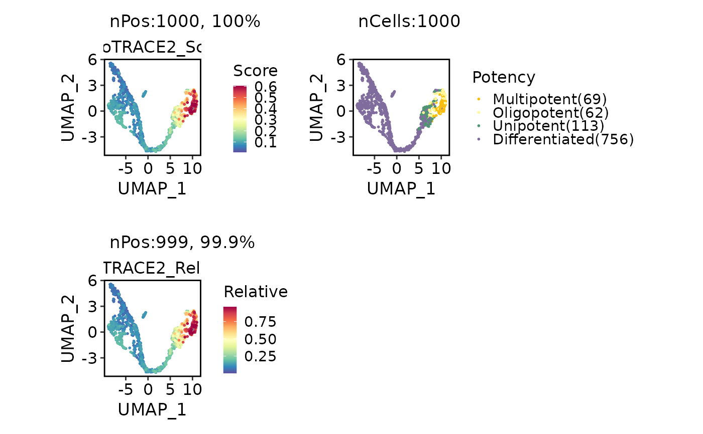

Predicts cellular developmental potential from single-cell RNA-seq data
using the CytoTRACE 2 algorithm (Kang et al., 2025).
By default, this function uses the native scop R/C++ implementation. Set
backend = "r" to call the official CytoTRACE2 R package.
The algorithm consists of five stages:
Preprocessing: Gene orthology mapping, feature selection, ranking, and log2-CPM transformation.
GSBN Ensemble Prediction: 19 pre-trained Gene Set Binary Network models predict a continuous developmental potency score (0-1) and a discrete potency category.
Diffusion Smoothing: A Markov random-walk-with-restart on a cell-cell similarity graph smooths the raw scores.
Binning: Within each potency category, cells are ranked and linearly scaled to corresponding segments of the unit interval.
Adaptive kNN Smoothing: PCA-based nearest-neighbor consensus refinement of the final scores.
Usage
RunCytoTRACE(object, ...)
# S3 method for class 'Seurat'
RunCytoTRACE(
object,
assay = NULL,
layer = c("counts", "data"),
species = c("Homo_sapiens", "Mus_musculus"),
batch_size = 10000,
smooth_batch_size = 1000,
compute_knn_smoothing = TRUE,
cores = 1,
backend = c("cpp", "r"),
seed = 14,
data_dir = NULL,
verbose = TRUE,
...
)
# Default S3 method
RunCytoTRACE(
object,
species = c("Homo_sapiens", "Mus_musculus"),
batch_size = 10000,
smooth_batch_size = 1000,
compute_knn_smoothing = TRUE,
cores = 1,
backend = c("cpp", "r"),
seed = 14,
data_dir = NULL,
verbose = TRUE,
...
)Arguments
- object
An object. This can be a Seurat object or a matrix-like object (genes as rows, cells as columns).
- ...
Additional arguments passed to the official
CytoTRACE2::cytotrace2()call whenbackend = "r".- assay
Which assay to use. If
NULL, the default assay of the Seurat object will be used. When the object also containsChromatinAssay, the default assay and additionalChromatinAssaywill be preprocessed sequentially.- layer
Which layer to use. Default is
"counts".- species
The species of the input data. Currently supported values are
"Homo_sapiens"and"Mus_musculus". Default is"Homo_sapiens".- batch_size
The number of cells to process at once. For datasets with more cells than this value, cells are randomly split into batches and processed independently. No batching if
NULL. Default is10000.- smooth_batch_size
The number of cells per subsample for the diffusion smoothing step. No diffusion subsampling if
NULL. Default is1000.- compute_knn_smoothing
Whether to run the final PCA-based adaptive kNN smoothing step. Set to
FALSEfor a faster score using the pre-kNN binned CytoTRACE2 output.- cores
Number of cores for parallel processing. Default is
1.- backend
Backend used to run CytoTRACE2.
"cpp"uses the nativescopR/C++ backend and is the default."r"calls the officialCytoTRACE2::cytotrace2()implementation.- seed
Random seed for reproducibility. Default is
14.- data_dir
Path to the directory containing CytoTRACE2 model data files. Used only by
backend = "cpp". IfNULL, uses model data prepared byPrepareDB(db = "CytoTRACE2"). Default isNULL.- verbose
Whether to print the message. Default is
TRUE.
Value
When the input is a Seurat object, the function returns a Seurat object with the following metadata columns added:
CytoTRACE2_Score: The final predicted cellular potency score (0-1)CytoTRACE2_Potency: The final predicted cellular potency category (Differentiated, Unipotent, Oligopotent, Multipotent, Pluripotent, Totipotent)CytoTRACE2_Relative: The predicted relative order (normalized to 0-1)preKNN_CytoTRACE2_Score: The potency score before KNN smoothingpreKNN_CytoTRACE2_Potency: The potency category before KNN smoothing
When the input is a matrix or data.frame, the function returns a data.frame with the same columns as above, with cell IDs as row names.
License
The CytoTRACE 2 model and associated data files are provided under the Stanford Non-Commercial Software License Agreement. Commercial entities wishing to use this software should contact Stanford University's Office of Technology Licensing (docket S24-057). See https://github.com/mengxu98/datasets/blob/main/CytoTRACE2/LICENSE for complete terms.
References
Kang, M., Brown, E., Almagro Armenteros, J.J. et al. "Improved reconstruction of single-cell developmental potential with CytoTRACE 2." Nature Methods (2025). doi:10.1038/s41592-025-02857-2
Model data: https://github.com/mengxu98/datasets/tree/main/CytoTRACE2
Examples
data(pancreas_sub)
pancreas_sub <- standard_scop(pancreas_sub)
#> ℹ [2026-06-28 04:54:09] Start standard processing workflow...
#> ℹ [2026-06-28 04:54:10] Checking a list of <Seurat>...
#> ! [2026-06-28 04:54:10] Data 1/1 of the `srt_list` is "unknown"
#> ℹ [2026-06-28 04:54:10] Perform `NormalizeData()` with `normalization.method = 'LogNormalize'` on 1/1 of `srt_list`...
#> ℹ [2026-06-28 04:54:10] Perform `FindVariableFeatures()` on 1/1 of `srt_list`...
#> ℹ [2026-06-28 04:54:10] Use the separate HVF from `srt_list`
#> ℹ [2026-06-28 04:54:10] Number of available HVF: 2000
#> ℹ [2026-06-28 04:54:10] Finished check
#> ℹ [2026-06-28 04:54:10] Perform `ScaleData()`
#> ℹ [2026-06-28 04:54:10] Perform pca linear dimension reduction
#> ℹ [2026-06-28 04:54:11] Use stored estimated dimensions 1:23 for Standardpca
#> ℹ [2026-06-28 04:54:11] Perform `Seurat::FindClusters()` with `cluster_algorithm = 'louvain'` and `cluster_resolution = 0.6`
#> ℹ [2026-06-28 04:54:11] Reorder clusters...
#> ℹ [2026-06-28 04:54:11] Skip `log1p()` because `layer = data` is not "counts"
#> ℹ [2026-06-28 04:54:11] Perform umap nonlinear dimension reduction
#> ✔ [2026-06-28 04:54:19] Standard processing workflow completed
pancreas_sub <- RunCytoTRACE(
pancreas_sub,
species = "Mus_musculus"
)
#> ◌ [2026-06-28 04:54:19] Running CytoTRACE2
#> ℹ [2026-06-28 04:54:19] Extracting expression matrix from `assay = RNA, layer = counts`
#> ◌ [2026-06-28 04:54:19] Running CytoTRACE2 with `backend = cpp`
#> ℹ [2026-06-28 04:54:19] Loading cached: CytoTRACE2 version: 1.1.0
#> ℹ [2026-06-28 04:54:19] Species: "Homo_sapiens"
#> ℹ [2026-06-28 04:54:19] Species: "Mus_musculus"
#> ℹ [2026-06-28 04:54:19] Dataset contains 15998 genes and 1000 cells.
#> ℹ [2026-06-28 04:54:19] Running on 1 subsample(s)
#> ℹ [2026-06-28 04:54:19] Using 1 core
#> ℹ [2026-06-28 04:54:19] 12486 input genes mapped to model genes.
#> ℹ [2026-06-28 04:54:19] Building results
#> ✔ [2026-06-28 04:54:36] CytoTRACE2 computed successfully
#> ✔ [2026-06-28 04:54:36] CytoTRACE2 computed successfully
CytoTRACEPlot(
pancreas_sub,
xlab = "UMAP_1",
ylab = "UMAP_2",
ncol = 2
)
